编译原理知识梳理
笔记
编译流程图
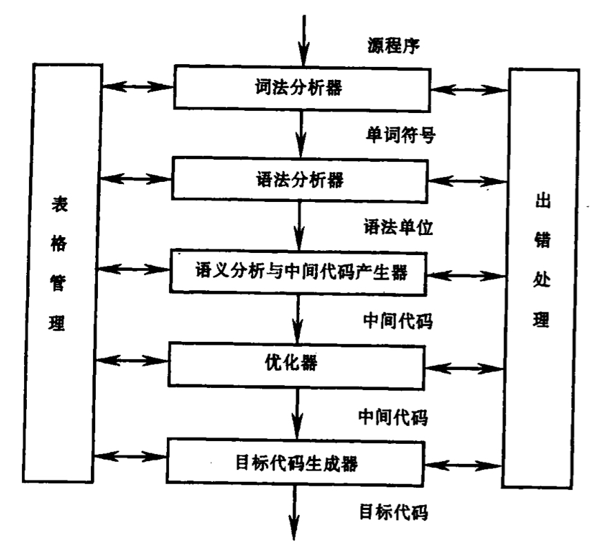
词法分析器：输入源程序，进行词法分析，输出单词符号；
语法分析器：根据文法构建分析表，对单词符号进行语法分析，检查程序是否符合语法规则；
语义分析与中间代码生成器：按照文法翻译规则对语法分析器归约出的语法单位进行语义分析，并把它们翻译成一定形式的中间代码；
优化器：对中间代码进行优化处理；
目标代码生成器：把中间代码翻译成目标代码。
运行环境
寄存器、虚拟内存属于运行时环境
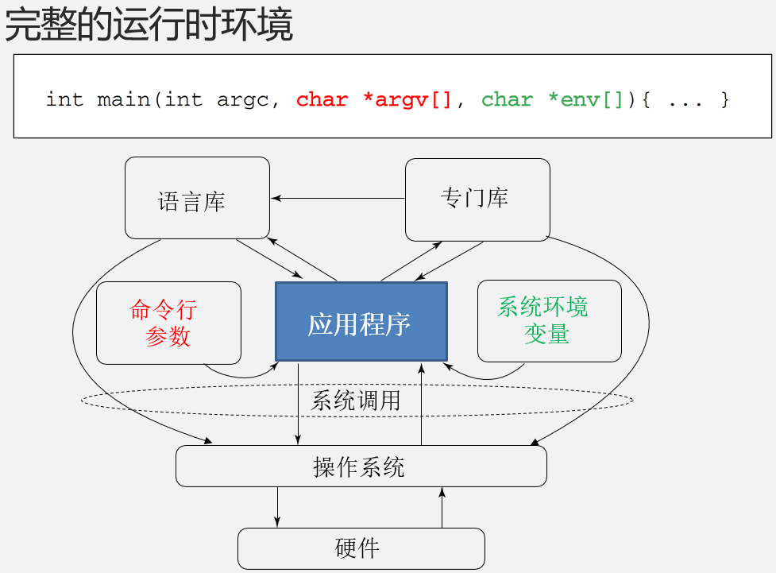
有穷自动机
有穷自动机的概念，说明 NFA DFA的区别
有穷自动机是一种计算模型，它能够根据有限的输入和状态转移规则产生有限的输出。
•非确定有限自动机 (Nondeterministic Finite Automata/NFA)：对边上的标号没有限制，一个符号可以作为标号出现在离开同一个状态的多条边上，ϵ可以做标号
•确定有限自动机 (Deterministic Finite Automata/DFA)：对于每个状态以及每个标号，有且只有一条边
语法制导翻译的思想
如何表示语义信息？为CFG（上下文无关文法）中的文法符号设置语义属性，以表示其对应的语义信息。
如何计算语义属性的值？
通过语义规则来计算文法符号的语义属性值，而语义规则与文法符号所在的产生式(语法规则)紧密相关
对于给定的输入串x，构建x的语法分析树，当应用某个产生式时，就利用与之关联的语义规则来计算分析树中相关结点的语义属性值。
制定与执行语义规则
语法制导定义(Syntax-Directed Definitions, SDD)
语法制导翻译方案(Syntax-Directed Translation Scheme, SDT)，有更具体的实现方案
中间代码
三地址码：突出特点是：每条指令右侧最多有一个运算符，一般形式：x = y op z
四元式：一般形式：op arg1 arg2 result
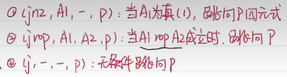
CFG上下文无关文法G=（VN，VT，P，Z）
VN ：非终结符集，所有非终结符的集合
VT ：终结符集，所有终结符的集合
P：所有产生式（或规则）集合
Z：开始符号（Z∈VN）
非终结符：出现在产生式的左部，且能推出符号或符号串的符号
终结符：不出现在产生式的左部,且不能推出符号或符号串的符号
二义性 (Ambiguity)：给定文法，若存在某个句子，有多个最左/右推导，即可以生成多棵解析树，则这个文法就是二义的
抽象语法树
直接子树：树高为1的二层子树，根节点只有直接后继
短语：每颗子树的叶子
直接短语：每颗直接子树的叶子
句柄：某句型的最左直接短语
素短语：至少包含一个终结符，且不包含更小的素短语
FIRST与FOLLOW
- FIRST（X）：可以从符号或符号串X推导出的所有串首终结符构成的集合
- 能推出非终结符，将该非终结符的first集元素加入，能推出空则后一个元素也具有判断能否加入first集的资格，空元素单独判断：所有的能推出的非终结符first集中均有空元素
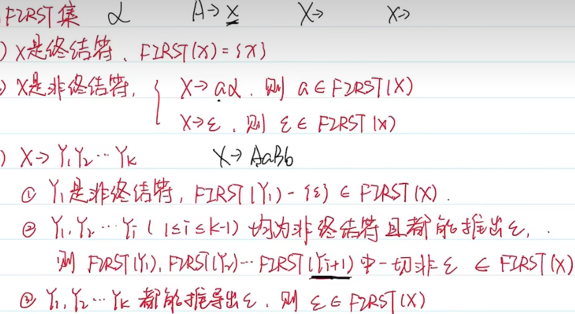
FOLLOW（A）：紧跟在非终结符A后边的终结符α的集合
求follow：后面字符或者字符串的first集，若first集中有空串（后面为空串也包括）再加上产生式左边非终结符的follow集
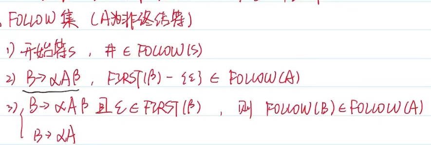
消除左递归：
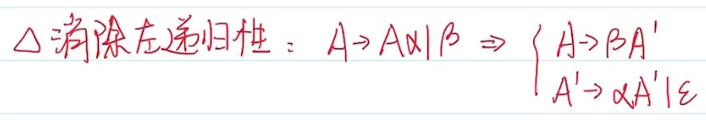
语法分析专项
自顶向下
LL(1)——右端first无交集
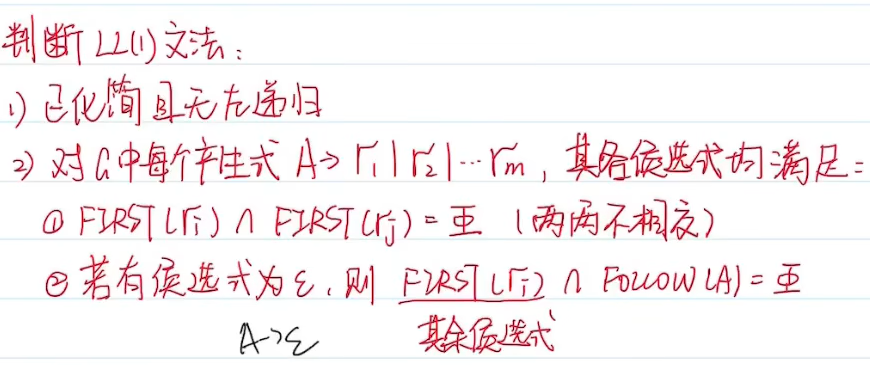
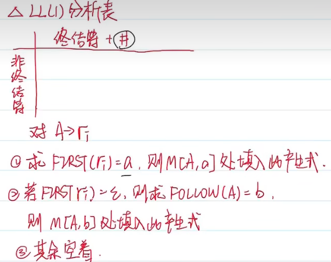
分析：符号栈从终止符+开始符（比如S）开始，输入串后加终止符
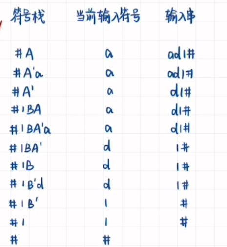
回溯法
如果有分析表就不用回溯了
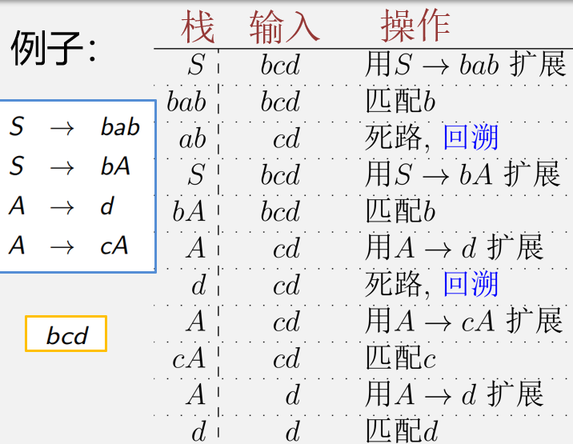
自底向上
几类文法的区别
LR分析的包含关系：LR0<SLR1<LALR1<LR1<无二义性
LR0——要求最高，无移进规约、归约归约冲突，分析表一整行均填rn
SLR1——所有移进的first与归约的左端follow两两不相交，分析表rn填在左端follow
LR1——需要向前搜索符，只需无归约归约冲突，分析表根据向前搜索符填写
LALR1——在LR1（无冲突）基础上合并同心集后无归约归约冲突，分析表根据向前搜索符填写
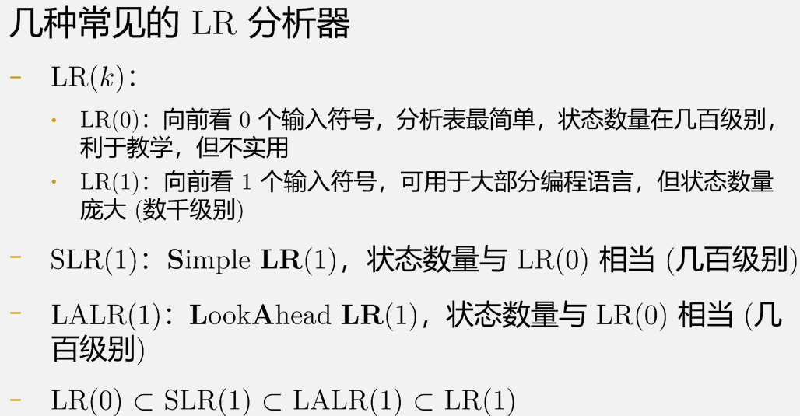
LR0——移进规约、归约归约
LR0一定也是SLR1、LALR1…
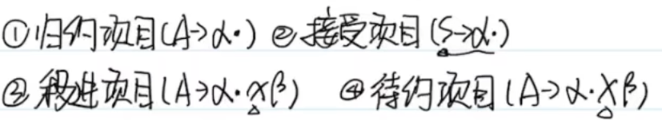
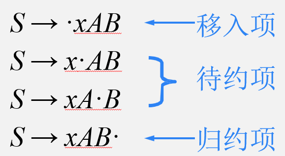
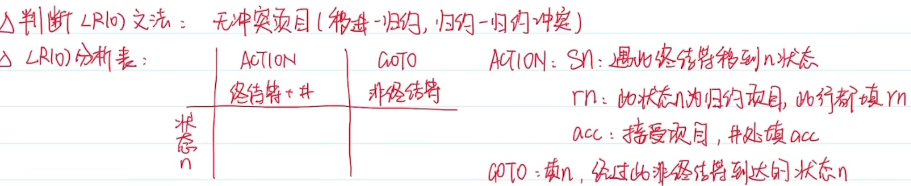
移进归约冲突：移进项目和归约项目出现在同一状态
归约归约冲突：不同归约项目出现在同一状态
SLR1——移进的first与归约的follow不相交
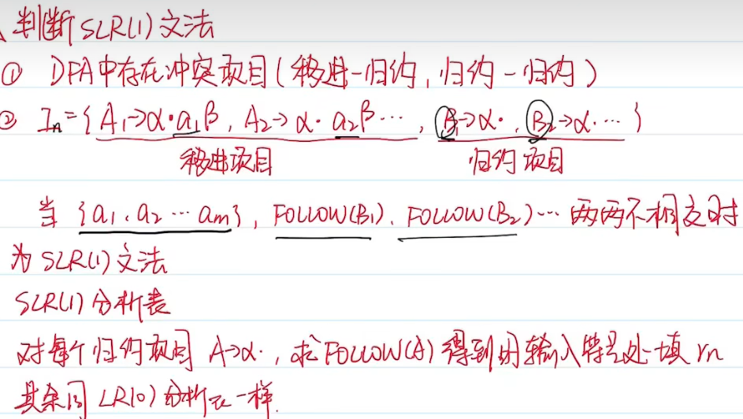
LR1——归约归约、向前搜索符
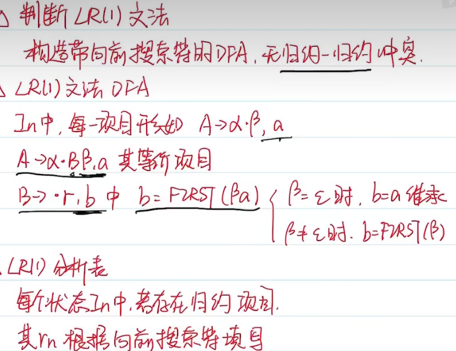
分析语句：始终在栈顶，规约时指针前移，将栈顶弹出，状态栈和栈中符号串一一对应，规约几个（规约式右端有几个）指针左移几位
LALR1——合并同心集后无归约归约
(在LR1基础上)
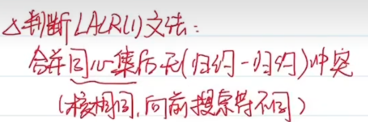
其它复习题
简述推导和归约的概念
推导和归约是两种基本的分析方法。推导是指从更基本的前提出发，通过一系列合法的推理过程，推出更高级的结论的过程。归约则是指将一个复杂的表达式或推理过程转化为更简单的形式，以便更容易地处理或证明其正确性的过程。
说明语法制导定义的概念。S-SDD、L-SDD的概念
将文法符号和语义属性相关联，按照需要来确定各个文法符号需要哪些属性。将每个产生式和一组语义规则相关联，这些规则用于计算该产生式中各文法符号的属性值。
这个计算流程就是
输入串、语法树、依赖图、语义规则计算次序
这种基于语法结构的处理方法就是语法制导翻译法S-SDD:每个属性都是综合属性，都是根据子构造的属性 计算出父构造的属性。在依赖图中，总是通过子结点的属性值来计算父 结点的属性值，可以与自底向上或自顶向下的语 法分析过程一起计算
L-SDD:每个属性
是综合属性，或
是继承属性，且A→X1 X2 … Xn 中计算Xi.a的规则只用到
A的继承属性，或
Xi 左边的文法符号Xj 的继承属性或综合属性，或
Xi 自身的继承或综合属性 (这些属性间的依赖关系不会形成环)每个S属性定义都是L属性定义
代码优化列举四种并说明
删除公共子表达式：
删除无用代码： 在复制语句x = y的后面尽可能地用y代替x
常量合并：如果在编译时刻推导出一个表达式的值是常量，就可以 使用该常量来替代这个表达式
代码移动：对于那些不管循环执行多少次都得到相同结果的表达式，在进入循环之前就对它们求值
强度削弱：用较快的操作代替较慢的操作
基本块划分方法
确定首指令leader (基本块的第一个指令)：
第一个三地址指令
任意一个(条件或无条件) 转移指令的目标指令
紧跟在一个(条件或无条件) 转移指令之后的指令
确定基本块：
每个首指令对应于一个基本块：从首指令开始到下一个首指令之前的部分
什么是综合属性（S属性）和继承属性（I属性）
假设分析树结点N对应非终结符A，只能通过N的子结点或N本身的属性值来定义的属性称为A的综合属性。假设解析树结点N对应非终结符A，只能通过N的父结点、N的兄弟结点或N本身的属性值来定义的属性称为A的继承属性。
终结符没有继承属性。终结符从词法分析器处获得的属性值被归为综合属性值。
编译的前端，后端，什么是一遍扫描
•前端对源语言进行分析，并产生中间表示，处理与源语言相关的细节，与目标机器无关
•后端对中间表示进行分析、优化，并产生新的中间表示；处理与目标机器相关的细节，生成目标机器代码
•前端与后端分开的好处：不同的源语言、不同的机器可以得到不同的编译器组合
编译器在处理源代码时只进行一次扫描，即在一次扫描中完成所有必要的操作，例如词法分析、语法分析和中间代码生成等。
在语法制导翻译中，空返产生式的作用（M->e）
通常用于指定可以生成空字符串的非终结符。这些非终结符通常用于定义可选的语法元素或者语法规则。
什么是L属性文法?
L属性文法是一种特殊类型的上下文无关文法，其中语法规则的右部只包含终结符号和L属性，而不包含R属性或S属性。
L属性是由左侧节点向右侧节点传递的属性值。
符号表作用。
存储标识符：符号表记录了程序中所有出现的标识符及其所在的位置，方便后续的语法分析、语义分析、代码生成等过程使用。
检查标识符的重定义：符号表可以检查程序中是否有相同名称的标识符被多次定义，如果有，则会发出错误提示。
存储标识符类型：符号表还记录了每个标识符的类型信息，如整型、浮点型、字符型等，这些信息会在后续的类型检查和类型转换中使用。
存储其他属性信息：除了标识符名称和类型之外，符号表还可以记录其他属性信息，如作用域、存储类别、访问权限等，这些信息对于代码生成和优化也非常重要。